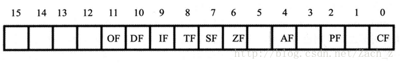
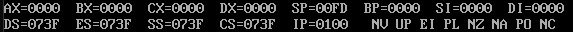

从0开始的汇编语言（十一）
前言
从0开始的汇编语言系列，选用的参考书籍是清华大学出版社，王爽老师的《汇编语言第四版》。该系列属于博主的笔记系列，文中会采用一些书中的例子，图片以及思考题供读者阅读，如需详细学习汇编语言可以购入一本，谢谢。
学习之前我们做如下约定（随着学习深入还会出现新的约定）：
- 十六进制数均以H结尾
- 使用8086CPU作为案例
- 我们使用(地址或寄存器名称)表示一个寄存器或一个内存单元的内容，()内地址是且一定是物理地址
- 我们将idata视作常量
- 我们以reg表示一个寄存器包括ax、ah、sp、bp、si、di等，sreg表示一个段寄存器包括ds、ss、cs、es。
话不多说我们马上开始。
标志寄存器
CPU内部的寄存器中，有一种特殊的寄存器，它具有一下三种作用：
- 用来存储相关指令的某些执行成果
- 用来为CPU执行相关指令提供行为依据
- 用来控制CPU的相关工作方式
它叫做标志寄存器flag，其中储存的信息通常被叫做程序状态字(PSW)，flag寄存器和其他寄存器不一样，其他寄存器都是整个寄存器具有一个含义，而flag是按位起作用的，每一位都有特定的含义。

flag寄存器的1、3、5、12、13、14、15位在8086CPU中没有使用，不具有任何含义，其余位都具有特殊含义。
ZF标志
我们知道flag寄存器的结构后，就分别来介绍一下用到的标志位，首先是ZF标志位。
flag寄存器中第6位：ZF，零标志位。它记录着相关指令执行后，其结果是否为0，如果为0，则ZF为1，反之ZF为0。这很好理解，只要执行的指令得到的结果是0，那么ZF就是1，比如：
1 | mov ax,1 |
这两条指令执行完后ZF就是1。
1 | mov ax,1 |
这两条指令执行完后ZF就是0。
注意，在8086CPU的指令集中，有的指令的执行是影响标志寄存器的，比如add，sub，mul，div，inc，or，and等它们多为运算指令；有的指令对标志寄存器是没有影响的，比如mov，pop，push等它们大多数为传送指令。
PF标志
我们介绍的第二个朋友就是PF标志位。
flag寄存器中第2位：PF，奇偶标志位，它记录相关指令执行后，其结果的所有bit位中1的个数是奇数个还是偶数个，如果为偶数，那么PF就为1，反之为0，比如：
1 | mov AL,1 |
这两条指令执行完后，结果为00001011B，其中有三个1，所以ZF就是0。
1 | mov AL,1 |
这两条指令执行完后，结果为00000011B，其中有两个1，所以ZF就是1。
(Tips：0也是偶数哦)
SF标志
接下来是第三位朋友SF标志位。
flag寄存器中第7位SF，符号标志位。它记录相关指令执行后，其结果是否为负数，如果为负数，那么SF为1，反之为0，比如：
1 | mov AL,10000001B |
这两条指令执行完后，结果为10000010B，如果进行的是有符号数计算，那么SF为1，代表结果为负。
1 | mov AL,10000001B |
这两条指令执行完后，结果为0，如果进行的是有符号数计算，那么SF为0，代表结果为正。
计算机中通常用补码来表示有符号数据，一个数据可以被看成有符号数字也可以被看成无符号数字，比如：
1 | mov AL,10000001B |
结果为(AL)=10000010B。我们可以认为add指令进行了一次无符号数运算，那么add指令就相当于计算了129+1，结果为130(10000010B)；当然我们也可以认为add指令进行了一次有符号数运算，那么add指令就相当于计算-127+1，结果为-126(10000010B)。
SF标志，就是CPU对有符号数运算结果的一种记录，记录了数据的正负，我们进行有符号数计算时，可以将SF标志作为判断数据正负的依据，当我们进行无符号数计算的时候，SF标志没有什么使用价值，因此我们要根据进行的计算，去观察SF标志。
CF标志
接下来介绍大哥，CF标志位。
flag寄存器第0位CF，进位标志位。一般情况下，进行无符号数计算的时候，注意是无符号数，它记录了运算结果的最高有效位向更高位的进位值，或从更高位的借位值。
对于位数为N的无符号数来说，其对应的二进制信息的最高位，为N-1位，也就是它的最高有效位，而我们假象出来的第N位，就是相对于最高有效位的更高位。
我们知道，当两个数据相加时，就有可能产生从最高有效位向更高位的进位。比如98H+98H，将产生进位。由于这个进位值在8位数中无法保存，我们之前只是简单的说这个进位丢失了，但其实CPU在运算时，并不丢弃这个进位值，而是记录在一个特殊的寄存器的某一位上。8086CPU就使用flag的CF位来记录这个进位值，比如：
1 | mov AL,98H |
第一条add指令执行后，(AL)=30H，CF=1，CF记录了从最高有效位向更高位的进位值，第二条add指令执行后，(AL)=60H，CF=0。
同样当进行减法运算时，也可能向更高位借位。比如，两个97H-98H，将产生借位，借位后就相当于计算197H-98H。CF标志为也可以记录这个值，比如：
1 | mov AL,97H |
第一条sub指令执行后，(AL)=FFH，CF=1，CF记录了向更高位的借位值，第二条sub指令执行后，(AL)=0H，CF=0。
哦对了，inc指令不会影响CF的值，要记住。
OF标志
flag寄存器第11位OF，溢出标志位。在仔细了解它之前我们先来了解一下溢出的问题。
在进行有符号计算的时候，如果结果超过了机器所能表示的范围称为溢出。那么什么是机器能表示的范围呢？比如说，指令运算的结果用8位寄存器或内存单元来存放，比如，add AL,3，那么对于8位的有符号数据，机器所能表示的范围是-128到127。同理，对于16位有符号数据，机器能表示的范围为-32768到32767。如果运算结果超过了机器所能表达的范围，将产生溢出。注意我们现在所讲的溢出，是针对有符号数而言，下面我们看个例子：
1 | mov AL,98 |
执行后将产生溢出。因为add AL,99进行的有符号数运算是：98+99=197，而结果197超出了机器能表示的8位有符号数的范围，这就发生了溢出，如果在进行有符号数运算时发生溢出，那么运算结果就不正确，就例子而言，add指令运算完的结果是(AL)=0C5H，因为进行的是有符号数计算，所以AL中存储的是有符号数，C5H是-59的补码，如果我们用add指令进行的是有符号数运算，那我们就得到了98+99=-59，这太夸张了！造成这样的原因是实际结果197无法在8位寄存器中存放，由于这样的事情存在，所以CPU要对指令执行以后是否产生了溢出进行记录。
现在我们回过头来看一下OF标志，如果指令执行以后发生了溢出OF=1反之OF=0，我们要注意，CF是对无符号数有意义的标志位，而OF是对有符号数有意义的标志位，比如：
1 | mov AL,0F0H |
两条指令执行后：CF=1，OF=1。对于无符号数运算来讲，0F0H+88H有进位，所以CF=1；对于有符号数运算来讲，0F0H+88H发生溢出，所以OF=1。
1 | mov AL,0F0H |
两条指令执行后：CF=1，OF=0。对于无符号数运算来讲，0F0H+78H有进位，所以CF=1；对于有符号数运算来讲，0F0H+78H没发生溢出，所以OF=0。
我们可以看出，CF和OF所表示的进位和溢出，分别是对无符号数计算和有符号数计算而言的，它们之间没有任何关系。
adc指令
adc指令是带进位的加法指令，它利用了CF位上记录的进位值，我们来看一下它的格式：
adc 操作对象1，操作对象2
它的功能是：操作对象1=操作对象1+操作对象2+CF，比如说adc ax,bx，实现的功能是(ax)=(ax)+(bx)+CF，我们看一下例子：
1 | mov ax,2 |
因为sub bx,ax发生了借位，这时CF=1，之后adc指令就计算了：(ax)+1+CF=2+1+1=4，所以(ax)=4。
为什么要加上CF的值呢？CPU为什么提供了这样的指令呢？我们先来回看一下CF的值的含义，adc指令使用到的CF的值的含义是由adc指令前面的指令决定的，也就是说，关键在于所加上的CF值是被什么设置的，如果CF是被sub设置的那么就是借位值，如果是add设置的那就是进位值，所以CF存在的意义就是用来进行高位数数据计算，比如add ax,bx也可以被看做add AL,BL，adc ah,bh它们是完全等价的。我们看一个例子：
计算1EF000H+201000H，结果放在ax（高16位）和bx（低16位）中，很显然add指令做不到计算这样大的数据，所以我们打算先计算低16位相加，然后计算高16位相加再加上CF的值。也就是：
1 | mov ax,001EH |
我们可以根据这个思路计算更大的数据相加。
sbb指令
sbb指令是带借位的减法指令，它利用了CF位上记录的借位值，我们来看一下它的格式：
sbb 操作对象1，操作对象2
它的功能是：操作对象1=操作对象1-操作对象2-CF，比如说sbb ax,bx，实现的功能是(ax)=(ax)-(bx)-CF。同样的我们也可以根据我们之前的思路，进行高位数数据的运算。这里我们不再赘述。
cmp指令
cmp指令是比较指令，cmp的功能相当于减法指令，只是不保存结果，cmp指令执行后将对标志寄存器产生影响，其他的指令通过识别这些被影响的标志寄存器位来得知比较结果。老样子我们看一下cmp指令的格式：
cmp 操作对象1，操作对象2
cmp指令的功能是这样的，计算操作对象1-操作对象2但并不保存结果，仅仅根据计算的结果对标志寄存器进行设置，比如cmp ax,ax它首先计算了(ax)-(ax)结果为0，但并不在ax中保存，仅根据0来设置flag中的相关位，这条指令执行后，ZF=1,PF=1,SF=0,CF=0,OF=0。
所以我们可以看出来cmp指令给了我们很多信息：
和add，sub指令一样，CPU执行cmp指令的时候也包含两种含义：对无符号数进行比较，对有符号数进行比较，上面我们讲的是对无符号数进行的比较，下面我们看一下对有符号数的比较：
我们以cmp ah,bh为例，如果(ah)=(bh)，则(ah)-(bh)=0，所以：ZF=1，反之ZF=0，所以我们根据ZF的值可以知道两个数据是否相等。接下来我们再来看(ah)<(bh)会发生什么，在这个情况下，(ah)-(bh)显然可能引起SF=1，即结果为负，但是我们不能因为SF=1就说明(ah)<(bh)，例如：(ah)-(bh)=34-(-96)=82H(-126)，我们不能因为计算后SF=1就说34<-96这显然是不合理的。当运算发生溢出以后我们逻辑上的得到的结果(130)和实际的结果(-126)是不一样的，所以单单根据SF去判断比较较结果是不可靠的，还要结合OF一起判断，下面我们就来看看SF和OF到底给我们提供了什么样的信息：
检测比较结果的条件转移指令
我们在之前的学习过程中，学到过一个条件转移指令jcxz指令，它通过检测(CX)是否为0，来判断是否进行条件转移，当然除了jcxz之外，CPU还提供了其他条件转移指令，大多数条件转移指令都检测标志寄存器的标志位，这些指令通常和cmp组合使用就像是call和ret的关系。
因为cmp有两种比较，无符号数比较和有符号数比较，所以和cmp组合的转移动指令也有两种，根据无符号数的比较结果进行转移的条件转移指令(它们检测ZF和CF的值)，根据有符号数的比较结果进行转移的的条件转移指令(它们检测SF、OF、ZF的值)。
下面是常用的根据无符号数的比较结果进行转移的条件转移指令：
这些指令很常用，而且很好记忆，它们的第一个字母j表示jump，之后的e代表equal，ne就是not equal，b是below，a是above。
当然了，这些指令的含义都是和cmp结合的时候才拥有的，它们做的事情只是检测相关标志位，符合条件就跳转，比如有这样一段程序：
1 | mov ax,0 |
执行过后，(ax)=1，因为add ax,0执行过后设置了ZF=1，je指令检测到ZF=1后跳转到S处，这里就不能说谁等于谁，也就是说je指令没有什么含义，因此我们一般将cmp和这些跳转指令一起使用，它们组合起来就像是高级语言中的IF一样起到一个条件判断的作用。有符号数比较跳转指令的原理就和无符号数比较跳转指令相同了，有兴趣可以查阅相关的指令手册。
DF标志和串传送指令
接下来介绍的是flag寄存器的第10位DF，方向标志位。在串处理指令中，控制每次操作后si、di的增减。DF=0每次操作后si、di递增；DF=1每次操作后si、di递减。知道了DF的作用后，我们还得知道串传送指令，我们来看一下movsb指令，首先是movsb的格式就是movsb，当执行movsb指令时就相当于做了这样几件事：
- ((es)×16+(di))=((ds)×16+(si))
- 如果DF=0则(si)=(si)+1,(di)=(di)+1
- 如果DF=1则(si)=(si)-1,(di)=(di)-1
它实现了将DS:SI指向的内存字节单元的内容送入ES:DI中，然后根据DF的值将SI和DI递增1或者递减1。还有另一个指令，movsw指令，它实现了DS:SI指向的内存字单元的内容送入ES:DI中，然后根据DF的值将SI和DI递增2或者递减2。
movsb和movsw都是串传送操作的一个步骤，一般来说这两个指令都会和rep指令配合使用，rep指令的格式是rep movsb，它做的事情就像是一个循环即s:movsb；loop s。可见rep的作用是根据CX的值，重复执行后面的串传送指令，因为每执行一次movsb指令si和di都会递增或递减一个单位，所以rep movsb可以循环实现(CX)个字符的传送。同理也有rep movsw。
因为DF标志位决定了串传送指令执行后，si和di改变的方向，所以CPU给程序员提供了相应修改DF位的指令，让程序员可以修改串传送的方向，这两个指令分别是cld指令(将DF置为0)，std指令(将DF置为1)。
pushf和popf
pushf的格式很简单就是pushf，它做的事情是将标志寄存器的值压栈，popf的格式也是popf，它做的事情是从栈中弹出数据，送入标志寄存器。这两个指令为直接访问标志寄存器提供了一种方法。
标志寄存器在Debug中的表示
最后的最后，我们要了解一下标志寄存器在Debug中怎么表示的，这样方便我们在程序调试的时候，观察这些标志位的变化。

当我们开始debug之后执行r指令，我们可以看到在IP寄存器之后有一串字符，这串字符就表示了几个标志位的值，但是这一些值我也分不清那个是那个标志位呀！没关系，我们给出了标志位中值的表示：
 wechat
wechat alipay
alipay